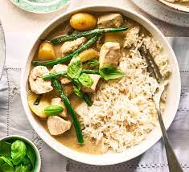

Thai Green Chicken Curry
Copied from delish.com

Description
Thai green curry is a variety of curry from Thailand using coconut milk and fresh green chillies.
This recipe in particular is for those who are after something super simple, a quick to throw together meal - and this bad boy takes just over half an hour to get on the table.
You can of course make your curry paste totally from scratch - and we admire you if you do - but we've opted for shop-bought here for ease.
As for the protein, we've used chicken, but you can also use fish, or even tofu to make it veggie. Thai aubergine and basil leaves are the traditional vegetables used, but we've gone for a combination of mangetout, baby sweetcorn and bamboo shoots.
Ingredients
- 2 tsp. vegetable oil
- 400 g skinless boneless chicken breast, cut into bite-size pieces
- 3 spring onions, sliced diagonally
- 1/2 red pepper, thinly sliced into strips
- 1 garlic clove, crushed
- Small handful Thai basil leaves, ripped
- 50 g Thai green curry paste (about 4 tbsp)
- 400 ml chicken stock
- 160 ml can coconut cream
- 1 tsp. fish sauce
- 175 g baby sweetcorn, sliced in thirds diagonally
- 225 g tin bamboo shoots, thoroughly drained
- 100 g mangetout, sliced in half diagonally
- Small handful Thai basil leaves, ripped, and lime wedges, to serve
Method
- Heat the oil in a large pan on high and brown chicken all over.
- Lower the heat to medium and add red pepper, spring onion, garlic and basil and cook, stirring occasionally for 5 mins.
- Add the paste and cook for 2 mins.
- Add the stock, coconut cream and fish sauce and bring to the boil.
- Lower the heat to medium, add the sweetcorn and bamboo and simmer for 5 mins.
- Add the mangetout and cook for a further 3 mins.
- Serve with boiled rice, some torn Thai basil leaves and a wedge of lime.
Back to home